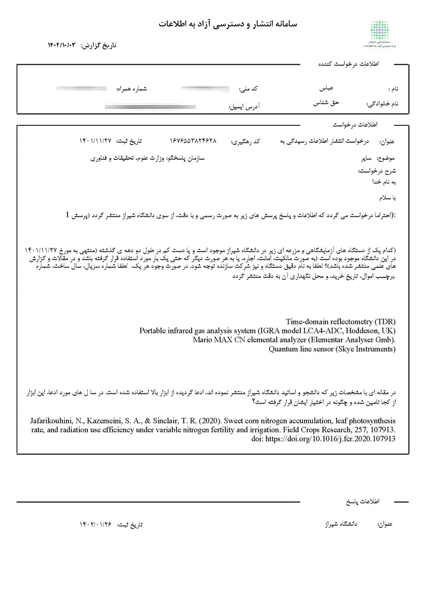
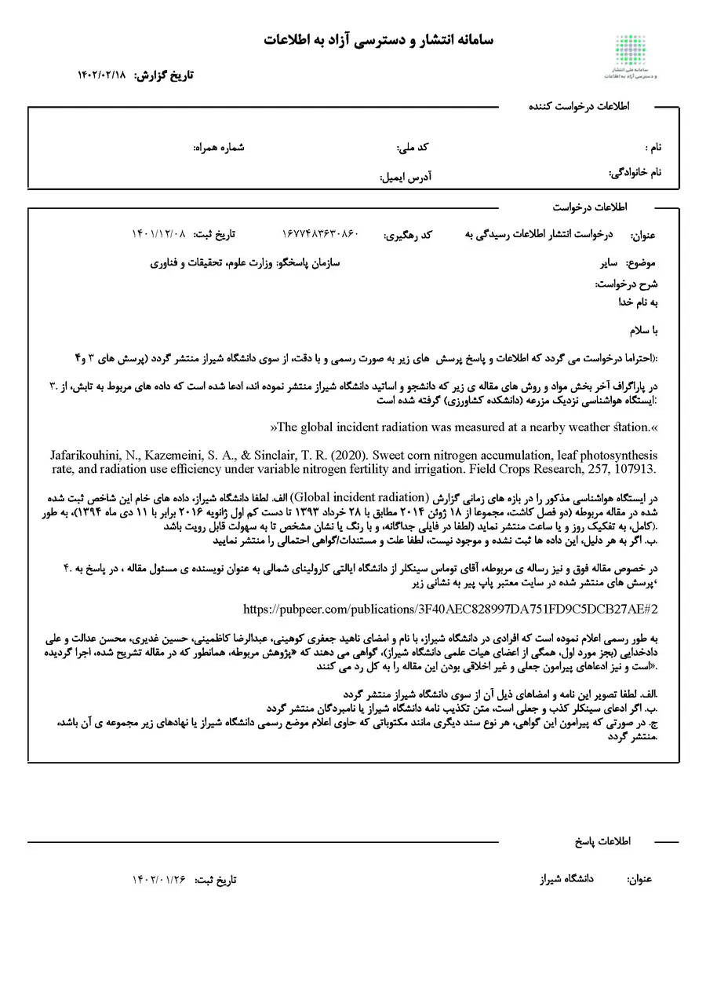
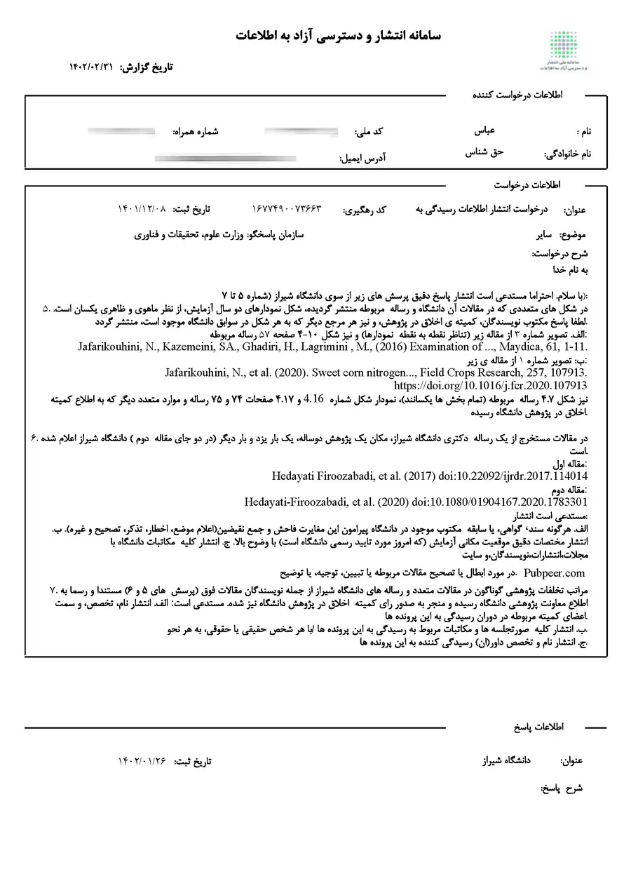
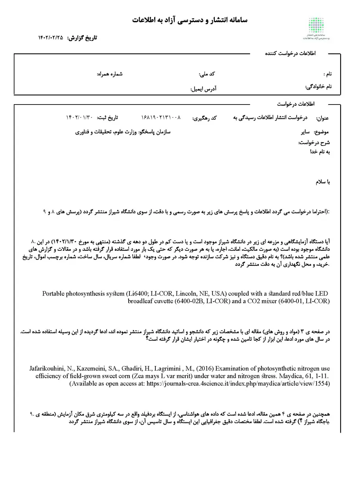
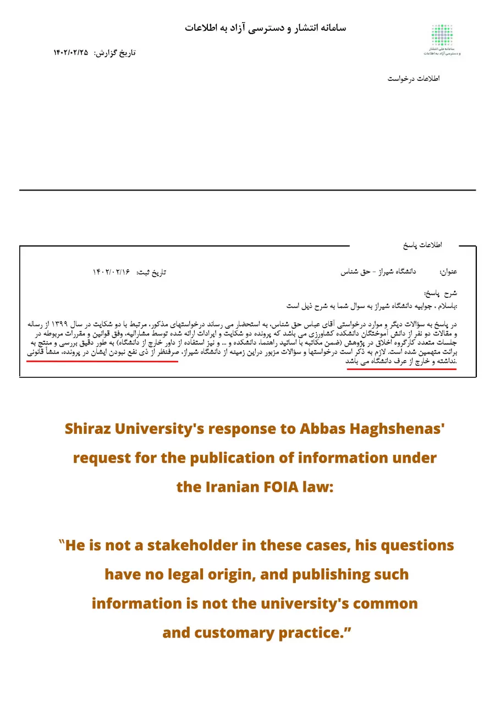
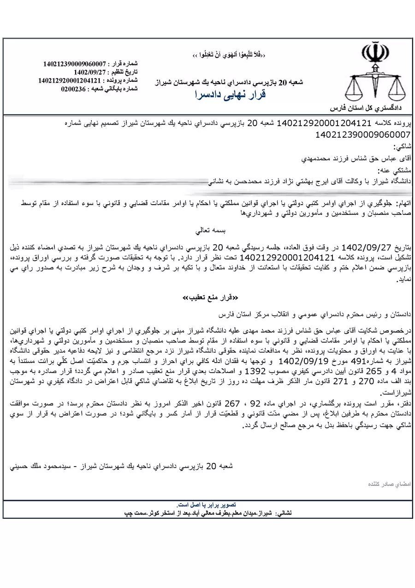

One of the most revealing stages of this experience involved Iran’s Law on Publication and Free Access to Information, commonly known as Iran FOIA.
In principle, the law provides citizens with a mechanism for obtaining information from public institutions.
For anyone seeking to verify scientific claims, such a mechanism should be invaluable.
To test it, I submitted a series of requests related to the cases discussed in Lesson One.
The requests were straightforward.
I sought information that could help verify publicly reported research claims, including details concerning experimental locations, equipment, and supporting records.
The information requested was neither classified nor personal.
Yet little meaningful information was ultimately disclosed.
Formal complaints regarding the lack of disclosure produced similar outcomes.
The importance of this experience extends beyond the specific documents involved.
Transparency is often evaluated by examining laws, regulations, and institutional procedures.
But transparency reveals its true value only when it is tested.
The essential question is not whether access to information exists in theory.
The essential question is whether it functions when evidence is needed, questions are uncomfortable, and accountability matters.
For me, that became one of the most important lessons of the entire project.





